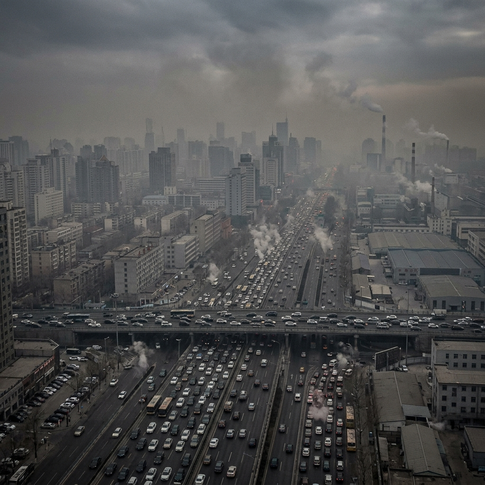
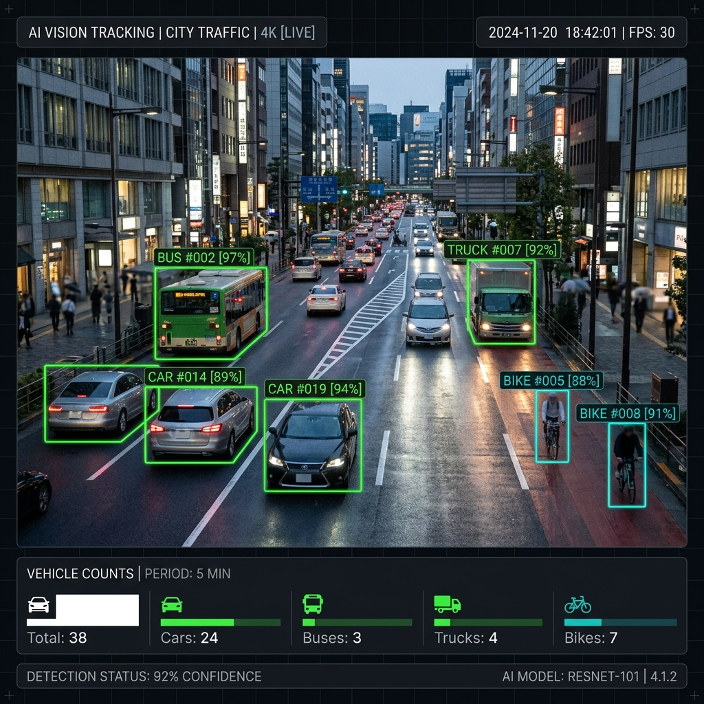
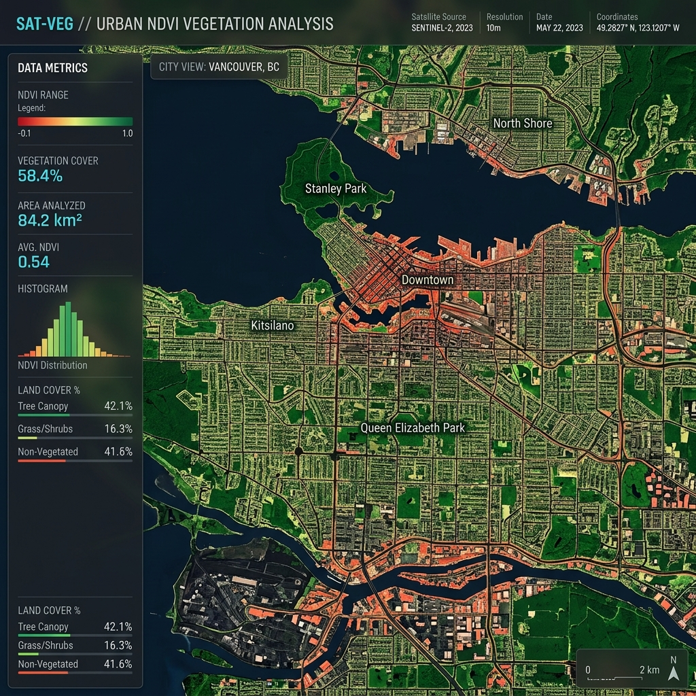

Air Vision uses advanced AI and satellite imagery to provide real-time insights into air quality, vegetation health, and urban vehicle density.
Urban environments are rapidly deteriorating. We cannot manage what we cannot measure. Air Vision bridges the data gap with high-resolution insights.

Our robust pipeline transforms raw satellite data into actionable ecological intelligence.
We ingest high-resolution satellite imagery covering urban and rural landscapes worldwide.
Deep learning models process the pixels to extract vehicles, estimate air quality, and calculate vegetation indexes.
Data is presented through an interactive dashboard to empower urban planners and environmentalists.
Real-time object detection allows us to estimate traffic density and correlate it with localized pollution spikes.
By identifying vehicle counts in specific urban zones, we provide crucial data for traffic rerouting, emission control, and the planning of future green zones.

Understanding the health of our plant life is critical to measuring the resilience of an ecosystem against pollution.

The Normalized Difference Vegetation Index (NDVI) uses satellite sensors to detect living green plant canopies. By tracking this over time, we identify deforestation and assess the impact of air quality on flora.
Air Vision is built to drive change, not just display data.